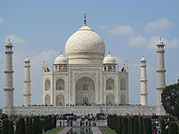

we went to India last year with my family .Me and my husband and my daughter. It was her first trip and she was three month old.we were so excited
we visited to many places there like Golden Temple,India Gate,Taj Mahal and so no.
Taj Mahal
The Taj Mahal more often meaning Crown of the Palace is an ivory-white marble mausoleum on the south bank of the Yamuna river
in the Indian city of Agra. It was commissioned in 1632 by the Mughal emperor, Shah Jahan (reigned 1628–1658), to house the tomb
of his favourite wife, Mumtaz Mahal. The tomb is the centrepiece of a 17-hectare (42-acre)[6] complex, which includes a mosque and
a guest house, and is set in formal gardens bounded on three sides by a crenellated wall.
Construction of the mausoleum was essentially completed in 1643 but work continued on other phases of the project for another
10 years. The Taj Mahal complex is believed to have been completed in its entirety in 1653 at a cost estimated at the time to be
around 32 million rupees, which in 2015 would be approximately 52.8 billion rupees (US$827 million). The construction project
employed some 20,000 artisans under the guidance of a board of architects led by the court architect to the emperor, Ustad Ahmad
Lahauri.

Inspiration
The Taj Mahal was commissioned by Shah Jahan in 1631, to be built in the memory of his wife Mumtaz Mahal, a Persian
princess who died giving birth to their 14th child, Gauhara Begum.[8] Construction of the Taj Mahal began in 1632.[9]
The imperial court documenting Shah Jahan's grief after the death of Mumtaz Mahal illustrate the love story held as the
inspiration for Taj Mahal.[10][11] The principal mausoleum was completed in 1643[9] and the surrounding buildings and
garden were finished about five years later.
Architecture and design
The Taj Mahal incorporates and expands on design traditions of Persian and earlier Mughal architecture.
Specific inspiration came from successful Timurid and Mughal buildings including the Gur-e Amir (the tomb of Timur,
progenitor of the Mughal dynasty, in Samarkand),[12] Humayun's Tomb, Itmad-Ud-Daulah's Tomb (sometimes called the Baby Taj), and
Shah Jahan's own Jama Masjid in Delhi. While earlier Mughal buildings were primarily constructed of red sandstone, Shah Jahan
promoted the use of white marble inlaid with semi-precious stones. Buildings under his patronage reached new levels of
refinement.
Shah Jahan and Mumtaz Mahal